基于直接刚度法的杆系有限元方法
2.1 弹簧的力学分析原理
首先是大家都知道的胡克定律： 。 但是这里引入了一个新的概念：刚度方程/矩阵。
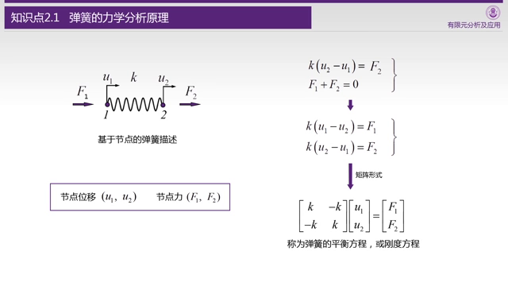
乍一看是画蛇添足之举，实则另有用处，这么处理之后的单元规范了，就可以和其他杆件连接了。
下一步分析两个弹簧的连接+存在一个外力作用在节点2上的实例：
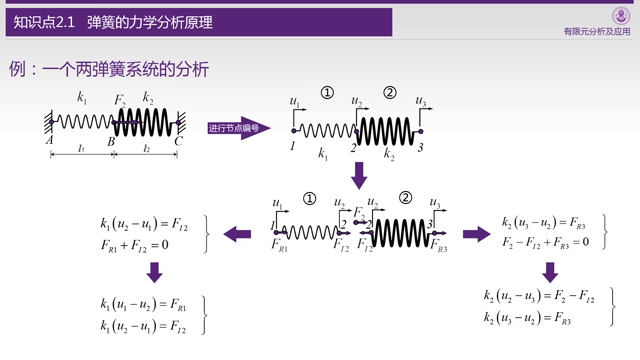
建模过程视频很详细，略了，大致思路是： 给右边的弹簧，弹簧内力设置为，左右相互抵消，这个将来要在方程组中约去。
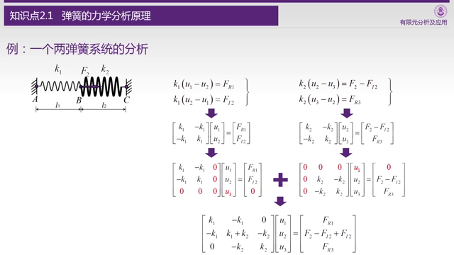
这里扩充矩阵，使其标准化为3✖3的矩阵，方便相加，这里取了一个巧，正常我们有两个方程组，例如：和，要揉成一个，一般会取两个系数，比如和，加上系数以后相加：
然后调整这些系数保证约去，视频里直接让两个方程组b的第二项的内力互为相反数，这样直接加起来就约掉了。
最后考虑和都是0（约束条件），所以得到u2的计算公式：
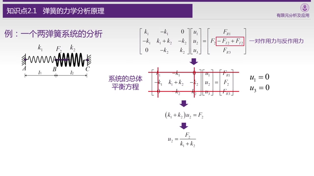
2.2 弹簧单元与杆单元的比较
杆单元和弹簧一样，都是线性元件，所以计算方式也是一样的。考虑弹性模量为E，长度为l，截面面积A的杆，等效于 的弹簧。
Q.E.D.
2.3 杆单元的坐标变换
之前的杆单元的位移u都是沿着杆的方向定义的，但是这个时候如果出现斜拉的杆件，计算就会显得有点复杂。
2.3节的主要思想，就是统一坐标系，全部分解到x-y或者x-y-z坐标系，这样刚度矩阵加起来就更加的流畅。
这一切，都会导致计算量大幅上升，但是这是值得的，因为带来的好处就是计算更加规范了，这样就利于编程实现，反正最后受苦的是CPU/GPU又不是我。
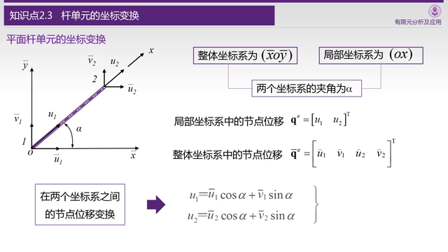
这里就很清晰的展示了坐标变换的方式，虽然2个坐标变4个了，但是考虑小变形问题的话， 是基本不会变化的，计算中省略其变化，所以秩其实还是2。
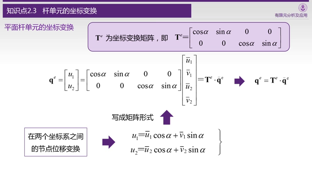
这里我们进行矩阵化，我们用矩阵T联系了变化前和变化后的坐标。
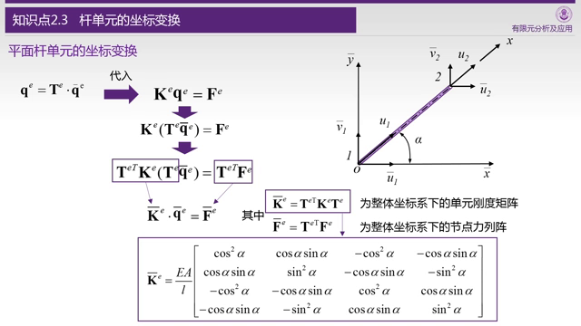
我们也需要对刚度矩阵进行同等的变换才可以让刚度阵（其实还有F向量）适应新的坐标，直接思考刚度阵的变化是很费脑细胞的，所以这里使用（线性）代数进行等效变换，我们得到了新的刚度矩阵，过程如下：
- 首先把坐标替换成
- 两边左侧乘以矩阵。
- 其实根据线性代数的理论这里其实乘什么都行，但是由于要对力F也进行坐标变换才乘以的这个矩阵。
- 只有用，右侧的式子才有物理意义了，代表的是力。
- 最后根据线性代数的结合律，我们把捆绑一下，就得到了新的刚度矩阵。
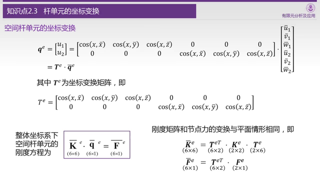
老师还列举了三维的形式，三维的刚度矩阵写出来可能一张PPT就满了（6x6），所以就略了。
2.4 一个四杆结构的实例分析
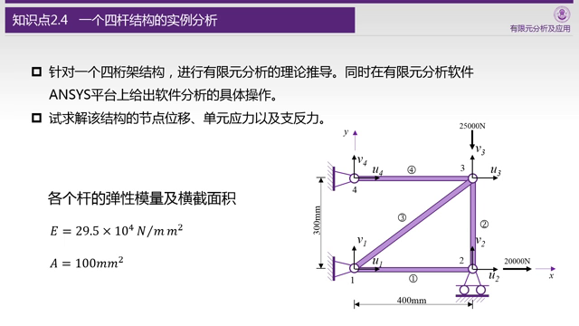
以上是今天要分析的问题，四个线性元件组成的桁架结构的受力分析。第一件事情其实是体力活儿，列出所有杆和节点的信息：
| 杆子 | 节点 | l | ||
|---|---|---|---|---|
| 1 | {1,2} | 400 | 1 | 0 |
| 2 | {3,2} | 300 | 0 | -1 |
| 3 | {1,3} | 500 | 0.8 | 0.6 |
| 4 | {4,3} | 400 | 1 | 0 |
| 节点 | x | y |
|---|---|---|
| 1 | 0 | 0 |
| 2 | 400 | 0 |
| 3 | 400 | 300 |
| 4 | 0 | 300 |
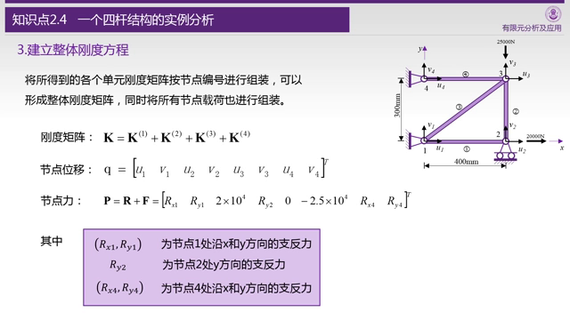
随后就是看着图片和表格填刚度矩阵，这个活太细碎了……
曾老师是先填写了一个个小的矩阵，然后扩充填0以后相加，不过我觉得直接填写应该也OK。
这里的支反力是因为有了约束条件，当你约束一个坐标的时候，坐标是已知了，但相应的你就产生一个未知的力。
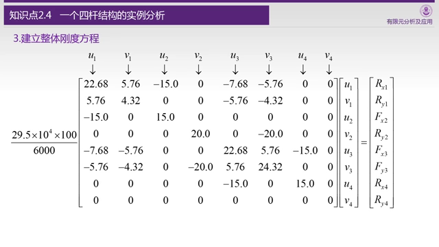
这就是刚度矩阵，好特么大……（对于人类而言），其中的，，都是刚才已知的力。
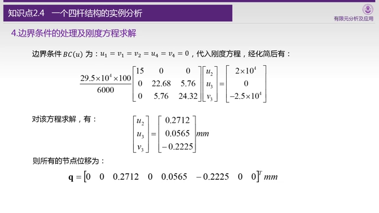
考虑到，，，，全都是0，所以未知数只有3个，而且直接就可以肉眼算出，最后只剩下一个二元线性方程组。
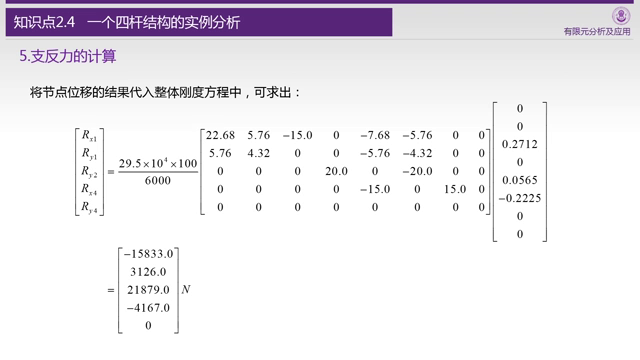
节点位移求出以后，支反力也就知道了，这个是很自然的，因为位移知道以后，拉伸量也就知道了。
2.5 四杆结构的ANSYS实例分析
略
As the plugin is integrated with a code management system like GitLab or GitHub, you may have to auth with your account before leaving comments around this article.
Notice: This plugin has used Cookie to store your token with an expiration.